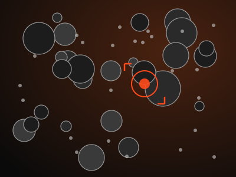
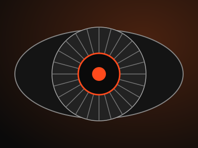

Check what you need
Clearance papers, fever rules, eye strain tips and first aid.
11
Get the checklist so you know exactly what to bring.
Simple health tips for students, and a clear look at the medical AI that helps doctors, not replaces them.
Explore AI Systems →Non-diagnostic notice: LAMBING gives general health literacy only. It does not replace professional medical advice.
Students line up at the clinic for routine questions, and good health advice is hard to find.
LAMBING gives quick answers and shows how medical AI helps doctors spot urgent problems sooner and do less paperwork.
AI assists. Doctors still decide.
Clearance steps, health guidance and medical AI explained in one place, always with a licensed doctor in charge.
How it works
Clearance papers, fever rules, eye strain tips and first aid.
Get the checklist so you know exactly what to bring.
See what each tool does, how it helps and where it falls short.
Tap any tool to see its limits too.
AI flags. Licensed physicians review and confirm before anything reaches a patient.
AI never makes the final call.
Walk in or call the campus clinic when you need real care.
Ask a question through the student inquiry form.
AI here means software that learns patterns from medical images, sounds and speech, then points out what a doctor should look at first. These are five advantages, each with real tools you can explore below.

AI checks scans for emergencies like stroke or a brain aneurysm and alerts the care team, so those patients are seen first.
Real tools: Aidoc, Gleamer

AI helps spot early signs of cancer and heart problems on X-rays, mammograms, heart ultrasounds and biopsy slides, and makes slide reviews more consistent.
Real tools: Lunit, Ultromics EchoGo, Ibex

AI turns the doctor-patient conversation into organized notes, so doctors can look at the patient instead of the keyboard.
Real tools: Abridge

Some tools screen eyes and skin spots right at the clinic and send the riskiest cases to specialists first.
Real tools: Digital Diagnostics LumineticsCore, Skin Analytics DERM

A digital stethoscope and 3D heart models give doctors extra information during routine exams and from scans they already have.
Real tools: Eko SENSORA, Heartflow
Ask questions and explore ten medical AI systems in one place.
LAMBING AI Companion — Interactive Module (Backend Ready)
Tap a tool to see what it does, how it helps and its limits. A doctor always makes the final decision.